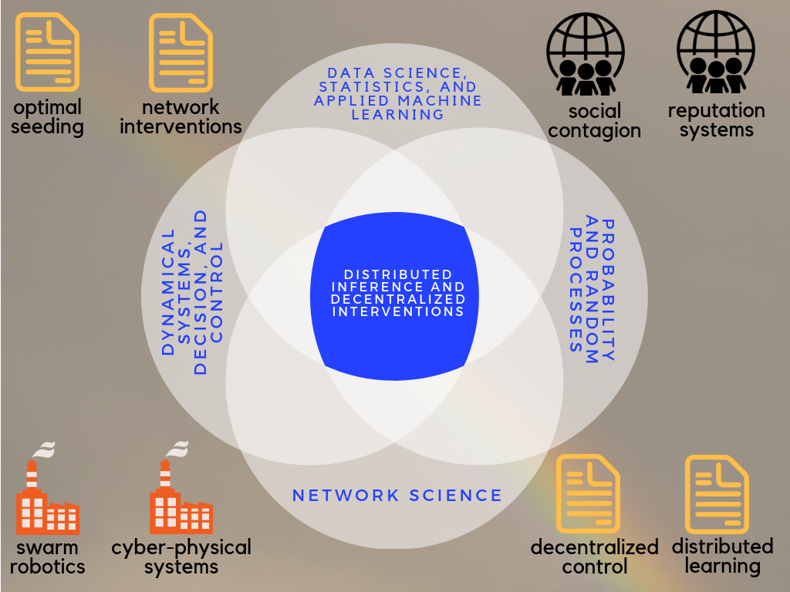
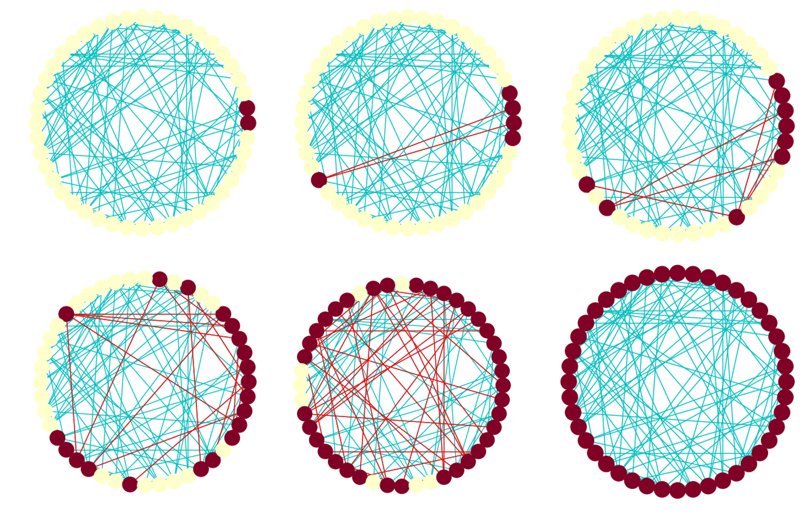
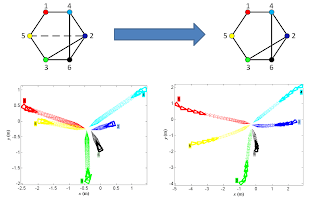
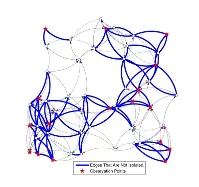
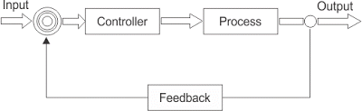

Research
I organize my research program around questions that help us navigate the age of data. On the one hand, the landscape for scientific research is itself changing: The combined force of high-end data analytics and high performance computing opens new ways for scientific discovery. More and more data from various sources and in novel forms are available to facilitate scientific inquiries. On the other hand, to overcome the trust barriers and embrace the increasing role of data and algorithms in our lives, we need a scientific understanding of the algorithmic, data-driven and platform-based economies. Research into large scale sociotechnical systems helps us in this transition.
 My research is primarily concerned with the challenges of analysis and decision making in large scale sociotechnical systems such as online social networks. Such systems operate in human (social and economic) as well as machine (dynamical and algorithmic) dimensions that are complex and conjoined. My work at the intersection of networks, data, and decision sciences is motivated by applications that involve sociotechnical networks and the demand for models and techniques that can work with the massive detailed data collected about them.
Scalable and resilient operation of large-scale networks is dependent on our ability to learn their properties from dispersed observations (i.e., distributed inference) and our ability to influence them form localized action points (i.e., decentralized interventions). The main goal of my research is to facilitate these functionalities; first and foremost, by identifying paradigms that best describe and predict individual and aggregate behaviors. Such behaviors are shaped by the interactions among network components (so-called agents) and they depend critically on the type and quality of the information available to each agent. Understanding these interactions helps us determine whether information transmission is efficient, and guides us through interventions that rely on information flow (e.g., adoption of a new technology). My ultimate aim is to demonstrate the power of behavioral paradigms in control and design, where their application leads to improved policies and practices.
Most of my early focus has been on technological networks (such as robotic sensor and actuator networks), where I have contributed to problems of decentralized control and distributed estimation: achieving global objectives by injecting local inputs on the one hand, and learning system properties given restricted partial observations, on the other. My current focus is mostly on the social systems side, and I have been interested in both the effectiveness of information transmission, sharing, and exchange through revealed actions, as well as the effectiveness of decision-making using the available data. In fact, these issues are inter-related, as are control and estimation. On the one hand, the quality of decision-making depends on the available information. On the other hand, decisions reveal some of the information at disposal of the decision-maker.
Information, Inference, and Interventions over Social Systems
Most of my ongoing research is focused on dynamic structural models that facilitate distributed inference and decentralized interventions on social systems. I am mostly interested in the development of structural models that take into account not only the statistical and causal dependencies between the (observable or latent) variables but also the behavioral mechanisms that influence the decision-makers in different situations. The latter often requires a deep understanding of social and human sciences to accurately characterize a decision scenario. Such models have the advantage of being amenable to policy interpretation while revealing the implications of the psychology of the mind in a particular scenario. Given the complexity of such models, Bayesian inference on them is often intractable. To overcome this intractability, I rely on approximate Bayesian computation and simulation-based techniques to perform inference, estimation, and prediction. The three processes that I am studying are:
social contagion
The spread of new ideas, products, and behaviors over social networks depends on the contact structure among individuals. In the presence of social or biological contagion, decision-makers in marketing, public health, development, and other fields strategize about where and how to intervene in a network (e.g., by giving a free product or suggesting a new contact).
network formation
Pervasiveness of social and economic network data give rise to important questions about the formation and evolution of links between the networked entities (agents). A better understanding of the underlying mechanisms of network formation has important implications for all manners of social policy and business strategy, where network interactions and externalities play a role.
online reputation
Reviews and ratings posted on electronic commerce platforms strongly influence the purchase and browsing behavior of customers, and play an important role in revenue generation.
Two of my most recent works in these areas are the following:
- In [1.1], we consider the choice of k seeds in a social network to maximize the expected spread size. Most of the previous work on this problem (known as influence maximization) focuses on efficient algorithms to approximate the optimal seed sets with provable guarantees, assuming the knowledge of the entire network graph. However, in practice, obtaining full knowledge of the network structure is very costly. To address this gap, we propose algorithms that make a bounded number of queries to the graph structure and provide almost tight approximation guarantees.
In [1.2], we study how interventions that change the network structure can increase the speed of spread. For simple models in which contagion spreads through each edge independently at random, interventions that randomly rewire the edges would increase the speed of spread. However, for other contagion models that require multiple exposures before adoption (i.e. threshold-based contagions), recent work has argued for the opposite conclusion: highly clustered, rather than random, networks facilitate spread. In [1.2], we characterize the conditions under which we can reverse the latter result by allowing a small probability of sub-threshold adoptions.
Nosedive (Black Mirror) offers an interesting perspective on the confluence of social contagion, link formation and reputation processes in a future dystopia, dominated by the social media. Aside from their societal impacts, these processes have a proven track record in revenue generation for e-commerce and viral marketing. A deep understanding of these processes is crucial to modern business practices.
See here for a list of the relevant publications.
Group Decision Making, Social Learning, and Collective Intelligence
In my Ph. D. dissertation, I studied the purely informational interactions of individuals in a group, where they receive private information and act based on that information while repeatedly observing each other’s beliefs or actions. Such situations arise for example in jury deliberations, expert committees, medical diagnoses, etc. I developed parallel theories of group decision making following the Bayesian and non-Bayesian approaches. In the Bayesian setup, I characterized the hardness of computations (NP-hardness), and investigated special structures in which computations simplify. In the non-Bayesian framework, I proposed the no-recall model to reconciles the existing heuristics for belief formation and decision making in groups.The following are some highlights from my research on group decision making and social learning:
Hardness of Bayesian group decisions (theory of computation, complexity) [2.1,2.2]
A no-recall model of heuristic decision making and social learning (decision theory, behavioral economics) [2.3,2.4,2.5]
Foundations of linear opinion dynamics (decision theory, Bayesian statistics) [2.6]
A new learning paradigm by switching between social and individual updating [2.7]
Effect of cognitive biases on the learning outcomes [2.8]
Two of the main issues that arise in the study of decision-making organizations are information aggregation and decision-flow architecture. My formal theories of group decision-making provide structural insights into both of these issues and can be operationalized to avoid redundancy and increase the efficiency of the aggregate group-decision outcome among heuristic decision-makers.
- In an on-going work, my collaborator and I are addressing the interplay between task features and network structure to optimize the group performance: A specific group structure maybe suitable for some tasks but not others.
In another on-going work, we are investigating learning from feeds in a setup that is characteristic of social media platforms. We investigate the learning outcomes subject to bounded-rationality.
Algorithmic, computational, and optimality aspects of decision-making in organizations are vastly unexplored. There are many untapped potentials for applying these techniques to improve the operations of teams in medical, legal and other industrial decision-making organizations. By investigating the effects of heuristics and biases, we can improve the practice of social and organizational policies, such that new designs can accommodate commonly observed biases, and work well in spite of them.
See here for a list of the relevant publications.
Control, Analysis, and Design of Networks
 Networked dynamic systems build upon complex interactions between many co-evolving sub-components. Their industrial applications are plentiful and diverse ranging from chemical and biological processes to robotics and the power grid. My results touch upon many aspects of the analysis and design for such complex systems, including distributed detection, estimation, reliable design, and decentralized control. I have been particularly interested in the following questions:
How can we identify failures and structural variations from the observed dynamics of a limited number of output nodes?
How can we exercise control over the entire networks by accessing only a few of their input nodes?
How can we learn about environmental variables from the dispersed and disparate observations of different nodes in a network?
Tools from control theory, optimization, signal processing, statistics, graph theory, combinatorics, and discrete algorithms have enabled us to propose effective solutions to each of these problems.
Some highlights from our results on the analysis and design of networked dynamic systems are as follows:
Efficient Placement of sensors for detection and isolation of failures (submodular maximization) [3.1]
Detection and isolation of link failures based on the observed outputs (linear systems theory) [3.1]
Distinguishing network structures based on their nodal dynamics (algebraic graph theory) [3.2]
Protecting structural controllability against link and node failures (graph theory, combinatorics) [3.3]
Efficient methods to rank links and nodes for the preservation of structural controllability (graph theory, combinatorics) [3.3]
Efficient placement of actuators for optimal control performance (submodular maximization) [3.4,3.5]
Learning from intermittent streams of heterogeneously correlated data (distributed estimation, learning theory, Bayesian statistics) [3.6]
Today cars and mobile phones rely on large arrays of sensors and actuators for their operations. Robotic networks are employed to manage massive inventories efficiently, at a low cost. The analytical tools that are developed in the study of complex network systems will pave the way for the Internet of Things, Cyber-Physical Systems, and other disruptive technologies of future.
Some of my more recent works in this area are focused on developing tools that pioneer applications of random matrix theory in the modeling and analysis of large-scale networks and dynamic systems. Such tools have great potential for addressing questions whose depth and analytical complexity have impeded researchers so far. They are also very versatile and expressive when it comes to modeling and explaining structural features of very large-scale systems such as robotic swarms or the extremely high dimensional data sets that arise in the study of the Internet and online social networks. Some of my main results so far are:
Limiting spectral moments of random matrices with rank one pattern of variance [3.7]
Limiting spectral moments of random graphs with specified expected degrees (the Chung-Lu model) [3.8]
Theoretical justification for the quasi-triangular spectrum of power-law networks (reported in empirical literature) [3.8]
H2 norm and the spectrum of the controllability Gramian of random linear systems [3.9]
The theoretical insights from random matrix theory are complementary to what we learn from the theory of random graphs or systems and control theory. Random matrix theory offers new ways of thinking about the design and analysis of massive scale systems.
See here for a list of the relevant publications.
Controller Design and Tuning
 The versatility and simplicity of proportional, integral and derivative (PID) actions have made them the most common form of feedback control, and almost universal all across the agriculture, transport, chemical and manufacturing industries, or even telecommunications and web services. Our ability to efficiently tune these controllers is key to their widespread adoption. My collaborators and I have advanced the state of the art in process control by proposing new ways of tuning feedback controllers. Our methods focus on explicit characterization of feasible domains in the control parameter space. Tools from complex analysis allow us to study the root boundaries of various polynomials that arise in the study of the feasible domains.
Fractional order control builds on a natural generalization of the integral and derivative feedback actions based on fractional order differential operators. We have successfully applied several of our techniques in the design and stabilization of fractional order controllers. Here are some of the highlights from our results on the design and tuning of feedback controller:
Constrained tuning and parameter optimization over the feasible regions [ 4.1, 4.2]
Using the stability region centroids for robust and non-fragile stabilization [4.3,4.4]
Stability regions for fractional-order controllers and their integer approximations [4.5]
Although, I no longer follow this line of work, the study of feedback control, early in my research career, has influenced my understanding of large-scale complex systems.
Ubiquitous adoption of proportional and integral actions for feedback control can be traced back to the industrial revolution. Improved tuning is essential as we encounter new challenging control applications in complex industrial processes. Fractional order controllers offer additional degrees of freedom in tuning, while preserving the essential structure of the PID feedback which is so popular in industrial applications.
See here for a list of the relevant publications.